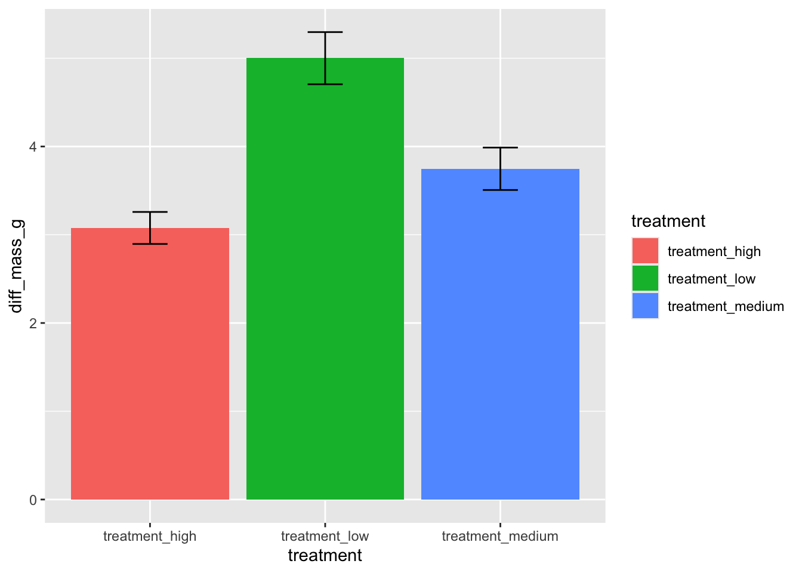

Due on Tuesday June 11 at 11:59 PM
Description
This is part 1 of your final. You have the option of working individually or in a group of up to 3 people for this section.
Attend workshop if you want to work in a group
If you choose to work with other people for this part of the final, you must attend workshop during week 9 (Thursday 30 May). We will be taking attendance that week.
If you work in groups without attending workshop week 9, you and everyone in your group will receive a 25% deduction on this part.
This part of the final is open communication, open note, open internet, etc.
Set up
a. GitHub steps
- Name the repo
ENVS-193DS_spring-2024_final, write a description, initialize with a README.
- Make the repository private.
- (if working in a group) Add collaborators from the class.
- (everyone) Add An (GitHub username:
an-bui) as a collaborator.
b. RStudio steps
- Clone the repository to your computer.
- Start a new Quarto document. In the
Authorfield, put the names of all group members.
- In your new Quarto document, create a code chunk at the top to read in any packages or data.
- Organize this code chunk to separate packages and data.
- Insert a link to your GitHub repo at the top of your document.
- Throughout the course of completing this portion of the final, commit and push changes at least 10 times.
- Write a README with a “General information” section, “Data and file overview” section, and a “Rendered output” section (you don’t have to use GitHub pages to get a link to your rendered output as a PDF).
- Link to the rendered PDF in your “Rendered output” section.
Problem 1. Research writing (17 points)
Skills you will demonstrate
In this problem, you will demonstrate your ability to identify gaps in statistical communication and justify why those gaps should be filled.
Problem
You’re working on a habitat restoration team with a coworker analyzing the effects of restored plant density on salt marsh soil temperature. They come to you with a draft of a report they’re writing to show other researchers that the restoration planting actually makes a difference, so they want to make their writing accessible to an audience of non-statisticians. They’ve written:
We rejected the null hypothesis that plant density has no predictive effect on soil temperature (p = 0.01).
You’re excited that they’re making progress on writing, but you think they can improve on what they’ve written.
a. Transparent statistical methods (2 points)
First, you know that they need to be more transparent about their stats so that they can be open about the statistical tools they used. You make some notes to yourself to keep track of their stats. Answer each question below in bullet points (1 sentence maximum if writing in full sentences):
- what kind of test is this?
- what is the distribution?
b. More information needed (3 points)
Second, you know your coworker has more to report if they want an audience of non-statisticians to understand their analysis. In a bullet point list, describe what each of the following components are statistically (i.e. what the basic definition is) and why your coworker should consider including them (i.e. how your coworker could interpret them)
- correlation coefficient
- model estimate for slope
- model estimate for intercept
c. Suggestions for rewriting (12 points)
In 2-4 sentences, rewrite this research statement to include the components from parts a-b and anything else that may be useful to be transparent about the statistical method.
Note: You’ve seen the data and you know that as plant density increases, soil temperature decreases. You won’t know what any of the output is, so leave “options” where your coworker could fill in the information (for example: “we found a (strong/medium/weak) effect of…” or “we expect a decrease of (model estimate ± standard error) in soil temperature…”).
Write each “option” in bold text.
Problem 2. Data presentation (12 points)
Skills you will demonstrate
In this problem, you will demonstrate your ability to critique a figure and make suggestions to make it better. Additionally, you will demonstrate your understanding of the code to implement those suggestions.
Problem
You’re working on a team with someone analyzing the effects of experimental ocean acidification (measured in pH) on California mussel (Mytilus californianus) shell calcification (measured in difference in grams pre- and post-experiment). They come to you with a draft of a paper they’re writing to share their results. They’ve created a figure that looks like this:
You then ask them to show you their code, and they show you this:
ggplot(data = data,
aes(x = treatment,
y = diff_mass_g,
fill = treatment)) +
stat_summary(geom = "bar",
fun = mean) +
stat_summary(geom = "errorbar",
fun.data = mean_se,
width = 0.2)a. Figure improvements (6 points)
You come up with a list of things they could do to make their figure better (list below). In one bullet point per component, articulate why making that change could make their figure better (1 sentence maximum if writing in full sentences):
- take out the legend
- show the underlying data
- change the axis titles/labels
- reorder the x-axis
- take out the gridlines
- use different colors
b. Give an example (6 points)
Draw an example of what the updated figure could look like on paper or digitally (e.g. Procreate, Adobe Illustrator) - whatever you have available to you. Label each component with the function or geom that your coworker would need to create the figure.
Insert a screenshot or photo in your document.
Problem 3. Data analysis (60 points)
Skills you will demonstrate
In this problem, you will be working with the bat recapture dataset from Hopkins, S.R., Hoyt, J.R., White, J.P. et al. Continued preference for suboptimal habitat reduces bat survival with white-nose syndrome. Nat Commun 12, 166 (2021). https://doi.org/10.1038/s41467-020-20416-5
You will demonstrate your ability to understand a data set that someone else collected and identify and execute the appropriate statistical method, with all assumption checks. Additionally, you will demonstrate your ability to visualize and communicate about the results of your statistical test.
Problem
Before starting this problem, google the bat species and the disease. Skim the abstract and methods to understand where the data came from.
Context
Answer these questions in full sentences (1 sentence each).
a. Response variable (2 points)
What do the 1s and 0s mean in this data set?
b. Biological interpretation of response (2 points)
In this data set, what does “recapture” represent biologically?
Data cleaning
Before doing this step, read in the data and store it as a new object called bats. Do any exploring you need to do but DO NOT include any code or output from your data exploration.
c. Clean the data (3 points)
Copy the cleaning code below to create an object called bats_clean.
Where each line is marked insert annotation here, write an annotation to describe what the code is doing.
bats_clean <- bats %>%
# create categories for disease load based on log-transformed values
mutate(disease_load = case_when(
logearlyloads < -3 ~ "low",
between(logearlyloads, -3, -2) ~ "moderate",
between(logearlyloads, -2, 0) ~ "high",
),
# insert annotation here
disease_load = fct_relevel(disease_load, "low", "moderate", "high")) %>%
# insert annotation here
rename(recapture_prob = EverRecapturedYN.x,
temp = earlytemp) %>%
# insert annotation here
select(recapture_prob, temp, disease_load) %>%
drop_na(temp)Analysis
d. Run the model (2 points)
Write your code to run the appropriate model. Annotate your code.
e. Check the diagnostics (2 points)
Check your diagnostics. Display the output.
f. Make a decision about your diagnostics (4 points)
In 1-2 sentences, describe whether or not you have anything to worry about with your diagnostic plots.
g. Visualize the model predictions (13 points)
Create a plot showing model predictions with 95% confidence intervals and the underlying data.
Show and annotate all code. Show the output.
For full credit:
- finalize the plot
- take out the gridlines
- use colors that are different from the default
h. Write a caption for your plot (6 points)
i. Calculate model predictions (13 points)
Calculate the predicted probabilities of recapture at 6 and 12 degrees C for each level in disease_load. Display the output in a table. Include the predicted probability of recapture with the 95% confidence interval. Round numbers as needed.
Show and annotate all code.
j. Write a caption for your table (3 points)
k. Interpret your results (10 points)
Write 3-5 sentences summarizing what you found, making references to the figure you made in part ____ and the table from part _____. This should include your interpretation of:
- the interaction of disease load and temperature on the probability of recapture
- the predicted probability of recapture at low temperatures (6 °C) and high temperatures (12 °C)
Checklist
Your submission should
- include your name(s), the title (“Final”), and the date (3 points)
- include for Problem 1
- written responses to parts a-c
- written responses to parts a-c
- include for Problem 2
- written response to part a
- photo/screenshot for part b
- written response to part a
- include for Problem 3
- written responses to parts a-b
- annotated code for parts c-e
- written response for part f
- annotated code and output (figure) for part g
- written response for part h
- annotated code and output (table) for part i
- written responses for parts j-k
- written responses to parts a-b
- include written responses to Problem 3 parts a-b, annotated code for part c
- be uploaded to Canvas as a single PDF (1 point)
- be organized and readable (10 points), meaning that
- you are submitting a rendered PDF
- all messages and warnings are hidden
- all figures and tables are displayed correctly in the rendered PDF
- all code annotations are visible in the rendered PDF
- you have a set up chunk at the beginning and each section only has the code corresponding to that specific section (for example, no reading in packages/data in the chunk to create a visualization)
- your document only has the components required (for example, if you wrote code to explore the data, you should not have that code in your document)
- you are submitting a rendered PDF
- be associated with a GitHub repository (15 points), meaning that
- you have a link to your GitHub repository at the top of your document
- you have committed/pushed at least 10 times over the course of completing your homework
- at least 10 of your commits/pushes contain a descriptive, concise commit message (a few words describing what changes you are committing)
- you have a link to your GitHub repository at the top of your document
- include an informative README (10 points) with a “General information” section, “Data and file overview” section, and a “Rendered output” section
128 points total